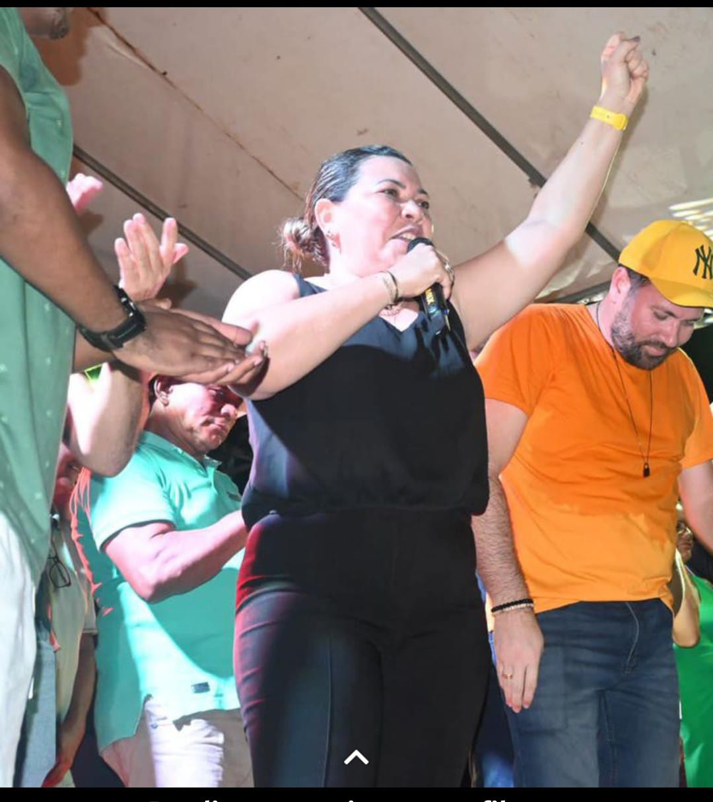
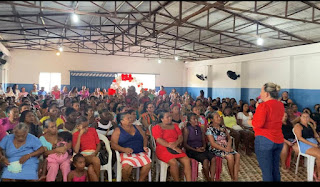
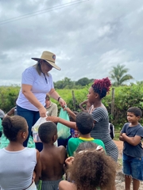

Vereadora Luana da Colônia Z-23 se destaca em popularidade na cidade de Penalva-MA
A história política de Penalva , não foi feita somente por pessoas que nasceram nessa cidade, mas também, por muitos que ganharam simpatia popular e que tiveram comprometimento com o povo baixadeiro e deixaram seus legados como legítimos filhos de Penalva. Alguns prefeitos eleitos pelo povo que não nasceram em Penalva : Roberto Mendes(1993-1996). Cavour Maciel (1956-1960). Zé Gonçalves (1973-1976). Zé Gonçalves (1983-1988).Vale ressaltar que, teve também, Vereadores eleitos pelo povo que também não nasceram nesse lugar , como: Zé Maia, Tomaz de Aquino, Doroteu Ricardo Viegas, Edgerson Brito, Mairi Gonçalves, Abimael Lopes, Natália Rodrigues, Silvano Sousa, Zé Gonçalves, Samuel Veloso, Natália Rodrigues, Pierre Teixeira, além de outros. Chamá-los de forasteiros, paraquedistas, seria externar ódio, usar termos pejorativos, preconceituosos, que não cabem mais em nosso contexto social. Basta percorrermos aos anais da história política do Maranhão, lembraremos do paraibano Epitácio Cafeteira que adotou São Luís, foi Prefeito, Governador e ajudou muito o maranhão a crescer .

Citaremos, também, o cearense Jackson Lago, o qual foi também Prefeito de São Luís e Governador, além de outros que deram sua parcela de contribuição em favor do nosso estado. E, no mais, mencionaremos José Sarney, filho dos Campos inundáveis da baixada maranhense, muito influente, foi político no Maranhão, Macapá, chegando a exercer até o mandato de Presidente da República, dada a morte de Tancredo Neves, em 21 de abril de 1985, do qual foi vice. Portanto, nenhuma pessoa tem o poder de escolher a cidade onde vai nascer, crescer, constituir família, trabalhar ou ser alguma autoridade. E somente Deus, poderá traçar nossos desígnios e missões para que cumpramos aqui na terra. Não depende inteiramente de nós. Zé Gonçalves natural de São Bento, chegou em Penalva para gerenciar a exportadora de babaçu (Oleama), amou a cidade, pelo seu trabalho e dedicação para com a nossa cidade, logo ganhou um bom círculo de seguidores, categoricamente enveredou pela política. Foi Vereador e Prefeito por dois mandatos. Foi o melhor Prefeito até sua época. Com grande prestígio com o Governador Nunes Freire, trouxe inúmeras obras de valia para Penalva, como Hospital Jesus de Nazaré, deu inicio ao calçamento de ruas, etc.
Luana Alves de Morais, é formada em Administração, mulher destemida e vencedora. Em 2018 de rápido destino, foi presidir interinamente a Colônia de Pescadores Z-23 em Penalva , até que fosse realizada uma eleição porque a Colônia estava irregular e com muita burocracia. Ela Trabalhou arduamente, conseguiu reestruturar a parte burocrática da Entidade, teve apreço popular, carismática, candidatou-se já por duas vezes, chapa única, tendo na última eleição conseguido 1257 votos válidos dos pescadores e pescadoras. Tem o título de Cidadã Penalvense outorgado pela Câmara Municipal. Em 2020, motivada por amigos , partiu para uma candidatura a Vereadora e surpreendeu a classe política com 900 votos, tendo sido a mais bem votada de todos. Já na eleição para deputado, em 2022 conseguiu os seguintes números:
Federal: 1.289 votos
Estadual: 1.019 votos
indicativo que seu eleitorado vem crescendo a cada eleição. Realiza o Sopão da Luana, em diversas localidades do Município, bem como suas inúmeras Ações Solidárias, como pelo Natal, Páscoa, dia das mães. E outras coisas que ela faz no anonimato em favor de pessoas que visitam sua casa, sempre carinhosamente recebendo a todos . Hoje, ela desfruta de uma admiração e apoio popular extraordinário. E, em Penalva, temos vários exemplos de políticos bem sucedidos e queridos pelo povo que não nasceram em Penalva , mas que fizeram brotar as sementes de suas semeaduras. Luana é mais um exímio exemplo.